Bölüm 01
Selanik Çocuğu, Manastır Aklı
Mustafa Kemal 1881’de Selanik’te doğdu. Babası Ali Rıza Efendi, annesi Zübeyde Hanım’dı. Selanik, onun çocukluğunda yalnızca bir liman şehri değildi; Osmanlı’nın bütün geç dönem gerilimlerini küçük bir alana sıkıştıran canlı, sert ve öğretici bir dünyaydı. Türkler, Rumlar, Bulgarlar, Yahudiler, konsolosluklar, ticaret yolları, komiteler, gazeteler ve askerî birlikler aynı şehrin içinde nefes alıyordu. Bu ortamda yetişen bir gencin siyaseti yalnızca kitaplardan öğrenmesi zaten mümkün değildi. Sokak da ders veriyordu, mektep de, devletin zayıflayan otoritesi de.
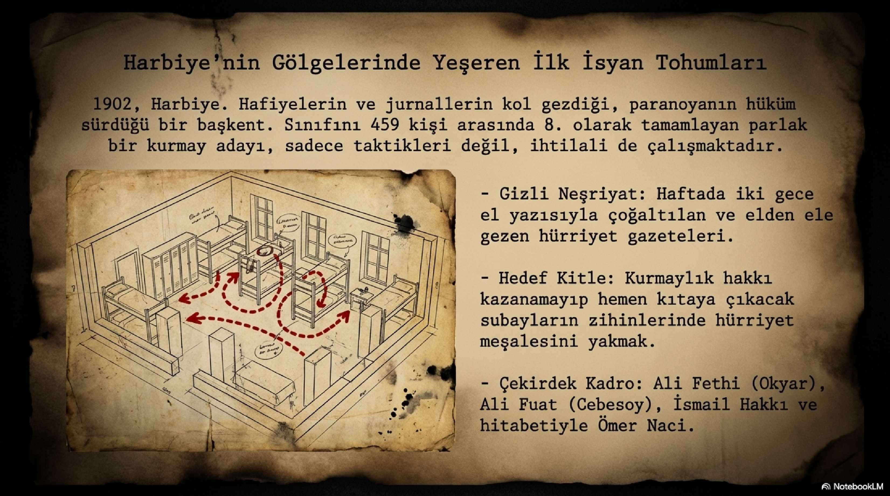
Askerî okullar bu dönemde yalnızca subay yetiştiren kurumlar değildi; batıya, modernliğe, yeni fikirlere ve devletin nasıl kurtulacağı sorusuna en açık yerlerdi. İttihatçılığın askeriye içinden çıkması tesadüf değildi. Tıbbiye, Harbiye, Mülkiye ve askerî idadilerde okuyan gençler hem imparatorluğun çöküşünü hissediyor hem de Avrupa’daki anayasa, hürriyet, millet ve bilim tartışmalarını takip ediyordu. Mustafa Kemal’in Manastır Askerî İdadisi ve ardından Harbiye’de şekillenen zihni de tam bu iklimin içinden geçti. Manastır’da Namık Kemal ve hürriyet fikriyle, Harbiye’de ise daha örgütlü bir muhalefet duygusuyla karşılaştı.
Harbiye’de üçüncü sınıfa geldiğinde arkadaşlarıyla birlikte el yazısı gazeteler hazırlamaya başladı. Bu küçük görünen faaliyet aslında büyük bir cesaret işiydi. Abdülhamid döneminde öğrenciler arasında hürriyet içerikli yazı dolaştırmak yalnızca gençlik heyecanı sayılmazdı; okuldan atılmak, tutuklanmak, sürülmek veya sicili yakmak mümkündü. Mustafa Kemal ve arkadaşları birkaç sayı çıkarabildiler. Yazılar elden ele dolaştı, sonra yakalanma ihtimaline karşı ortadan kaldırıldı. Rıza Paşa’nın bu faaliyeti fark edip çok sert davranmaması, onun meslek hayatına daha başlamadan kırılmasını önledi.
1902’de Harbiye’yi bitirdiğinde sınıfında başarılı bir yerdeydi. Ardından kurmay eğitimi aldı. Bu yıllarda yalnızca ders çalışan bir subay adayı değildi; Makedonya’nın gerilla tecrübesini, Balkanlardaki komite düzenini, devletin zayıf noktalarını ve silahlı mücadele yöntemlerini de düşünüyordu. Daha sonra Trablusgarp’ta işine yarayacak bazı saha bilgileri bu yıllarda oluştu. Yani Mustafa Kemal’in erken dönemi, romantik bir hürriyet hevesiyle sınırlı değildir. Daha o yaşlarda fikir, teşkilat, askerlik ve coğrafya aynı masada duruyordu.
Bölüm 02
Sirkeci’de Tutuklanan Kurmay Adayı
1905’te kurmay yüzbaşı olarak mezun olduğunda normal şartlarda parlak bir kurmay subay kariyeri beklenebilirdi. Fakat İstanbul’daki günleri temiz bir mezuniyet töreni gibi geçmedi. Sirkeci’de kaldığı pansiyon, genç subayların rejim üzerine konuştuğu, memleketin halini tartıştığı bir mekana dönüşmüştü. Bu görüşmeler kısa sürede hafiyelerin kulağına gitti. Mustafa Kemal gizli bir komiteye öncülük ettiği şüphesiyle tutuklandı. Ali Fuat kısa süre, Mustafa Kemal ise yaklaşık bir ay gözaltında kaldı. Henüz ilk görevine başlamadan devletin gölgesi omzuna dokunmuştu.
Bu tutuklama onun kariyer rotasını etkiledi. Asıl beklenen yer Rumeli’deki III. Ordu iken, 5 Şubat 1905’te Şam’daki V. Ordu’ya gönderildi. Bu tayin bir bakıma cezalandırma kokusu taşıyordu. Çünkü hürriyet fikrinin en canlı olduğu yer Rumeli’ydi; Şam ise hem merkeze uzak hem de örgütlü muhalefet için çok daha zor bir sahaydı. Ama bazen tarih, insanı bilerek veya bilmeyerek yetişeceği yere gönderir. Mustafa Kemal için Şam, hayal kırıklığı kadar örgüt denemesi demekti.
Bölüm 03
Şam’da Vatan ve Hürriyet
Şam’a vardığında gördüğü manzara onu memnun etmedi. Askerî disiplin zayıftı, birliklerin eğitimi yetersizdi, yerel ortam hürriyet fikrini büyük bir heyecanla karşılayacak gibi durmuyordu. Bazı askerlerin tavrı, idarenin gevşekliği ve halktaki ilgisizlik Mustafa Kemal’i sarsmıştı. İstanbul ve Manastır’daki tartışmalarla Şam’ın havası aynı değildi. Burada romantik devrim havası değil, uyuşukluk ve dağınıklık vardı. Fakat o bu tabloyu yalnızca şikayet etmekle geçirmedi.
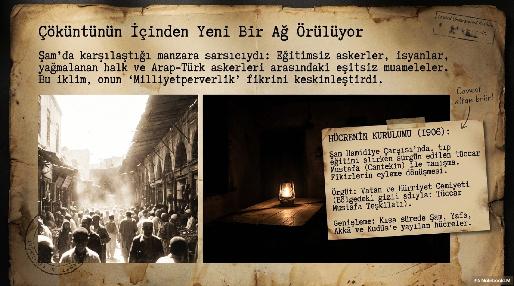
1906’da Mustafa Cantekin ve bazı arkadaşlarıyla birlikte Vatan ve Hürriyet Cemiyeti’ni kurdu. Cemiyetin hedefi Abdülhamid idaresine karşı hürriyetçi bir mücadele yürütmekti. Şam, Yafa, Akka ve Kudüs gibi yerlerde temaslar kuruldu. Fakat Mustafa Kemal kısa sürede gerçeği gördü: Şam’da kurulan yapı, tek başına imparatorluğu sarsacak bir merkez olamazdı. Mücadele Rumeli’de, özellikle Selanik ve Manastır hattında gerçek karşılığını bulabilirdi. Bu yüzden büyük bir risk aldı. İzin sınırlarını zorlayarak Yafa ve Mısır üzerinden Selanik’e geçti. Yakalanırsa meslek hayatı bitebilir, sürgün veya hapis kapısı açılabilirdi.
Selanik’e gizlice gelişi yalnızca örgüt işi değildi; annesi Zübeyde Hanım’la da görüştü. Annesi oğlunun başına geleceklerden endişe ediyordu. Mustafa Kemal ise ona, bugün sakin okunsa bile o gün için oldukça iddialı sayılacak bir güven duygusuyla cevap verdi: Merak etmemesini, padişahın ne olduğunu yakında göstereceğini söyledi. Bu sözde genç bir subayın kendine güveni var; ama aynı zamanda dönemin hürriyetçi kuşağının ruh hali de var. Onlar devleti yıkmak için değil, devleti kurtarmak için mevcut idarenin aşılması gerektiğine inanıyorlardı.
Bölüm 04
Selanik’te Karşılaşma: Vatan ve Hürriyet mi, İttihat mı?
Mustafa Kemal Selanik’te Hakkı Baha Bey’in evinde arkadaşlarıyla toplandı. Ömer Naci gibi isimlerin de içinde bulunduğu çevreye Vatan ve Hürriyet fikrini anlattı. Fakat Selanik’te başka bir gerçek daha vardı: Osmanlı Hürriyet Cemiyeti zaten kurulmuş, özellikle Talat ve çevresinin çalışmalarıyla hızla örgütlenmeye başlamıştı. Mustafa Kemal kendi cemiyetini büyütmek isterken, karşısında ondan daha hazır, daha yerel, daha bağlantılı bir ağ buldu. Bu, onun için kolay hazmedilecek bir durum değildi.
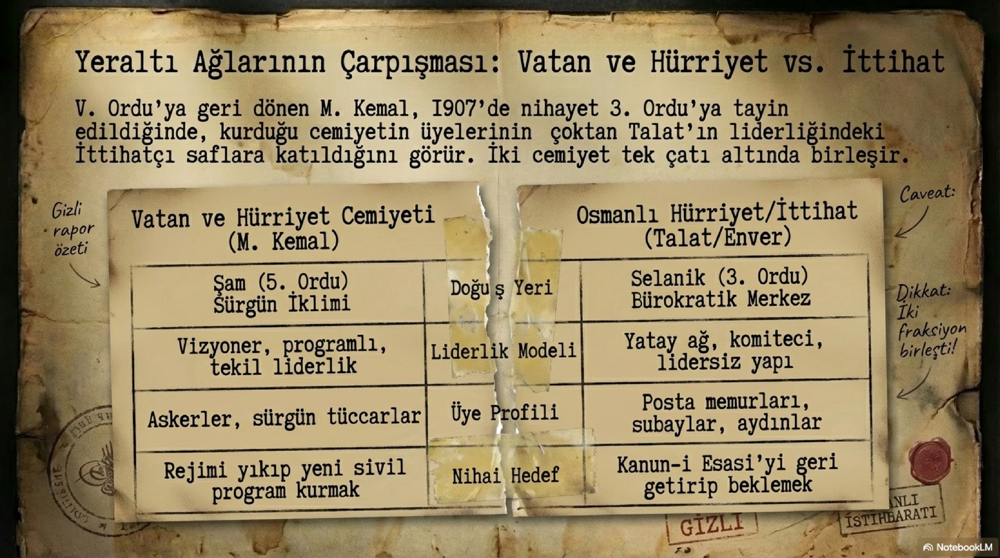
Burada Mustafa Kemal’in İttihatçılıkla ilişkisini belirleyen ilk psikolojik kırılma görünür. Hedefler benzerdir: hürriyet, Meşrutiyet, Abdülhamid istibdadına son vermek. Fakat yöntem, merkez ve liderlik meselesi farklıdır. Selanik ekibi daha pragmatik, daha komiteci ve daha hızlı örgütlenen bir yapı kurmuştu. Mustafa Kemal ise daha başından itibaren fikrî disiplin, askerî düzen ve liderlik meselesine önem veriyordu. Bu yüzden İttihatçı dünyanın içine girdi ama merkezin doğal sahibi olmadı.
13 Ekim 1907’de Selanik’e tayin edilmesiyle bu ilişki resmileşti. Osmanlı Hürriyet Cemiyeti’ne üye oldu. 1908 Meşrutiyeti’ne giden süreçte İttihatçı çevrenin içinde yer aldı. Fakat 23 Temmuz 1908’de Meşrutiyet ilan edildiğinde omuzlarda taşınan başlıca kahramanlar Enver, Niyazi ve Selanik-Manastır hattındaki eylemci kadrolardı. Mustafa Kemal’in adı bu kadar parlak görünmedi. Onun kabiliyeti biliniyor, askerî zekasından yararlanılıyor, fakat karar masasında ona geniş bir alan açılmıyordu. Bu sessiz gerilim sonraki yılların zeminini hazırladı.
Bölüm 05
1909 Kongresi: Fikirdeki Büyük Çatlak
Mustafa Kemal’in İttihat ve Terakki içindeki en büyük çıkışı 1909 kongresinde geldi. Ona göre ordu ile siyaset kesin biçimde ayrılmalıydı. Subaylar ya orduda kalmalı ya siyasete geçmeliydi; ikisini aynı anda yürütmek hem orduyu yıpratır hem siyaseti askerî rekabetin içine hapsederdi. Bu fikir bugün kulağa makul gelebilir. Fakat 1909’un İttihatçı dünyasında bu neredeyse merkeze meydan okumaktı. Çünkü Cemiyetin gücü büyük ölçüde subaylardan, askerî ağlardan ve Rumeli ordusunun fiili desteğinden geliyordu.
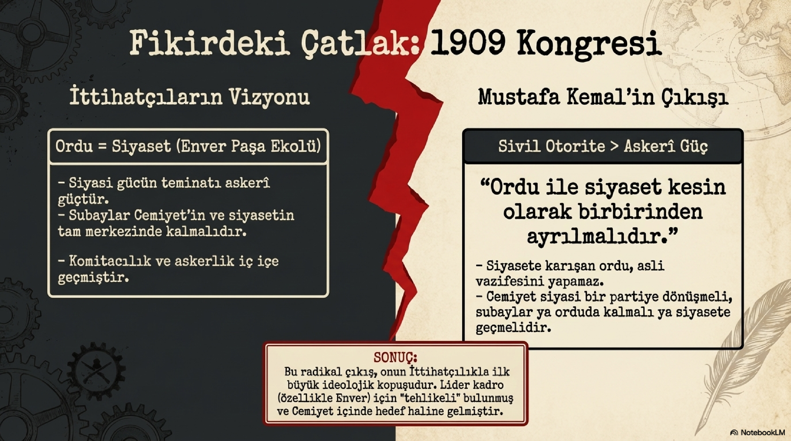
Bu çıkış Mustafa Kemal’in kişiliğini çok iyi gösterir. O, yalnızca kendisine yer verilmediği için küsen bir subay değildi. Asıl meselesi sistemdi. İttihat ve Terakki’nin gizli komite, siyasi parti ve askerî güç arasında gidip gelen yapısını tehlikeli buluyordu. Cemiyet bir siyasi parti olacaksa askerî kimliğin gölgesinden çıkmalıydı. Ordu devletin sigortasıysa günlük siyasetin kavgasında yıpratılmamalıydı. Bu düşünce onun ileride kuracağı siyasi düzen açısından da önemlidir. Mustafa Kemal daha 1909’da, askerî gücün siyaseti yönetmesinin uzun vadede devlete ağır bedel çıkaracağını görüyordu.
Kongrede onun teklifinin yumuşatılmış bir biçimi kabul edildi; fakat asıl fikir merkezin ruhuna yerleşmedi. Bu andan sonra Mustafa Kemal İttihat ve Terakki’den tamamen kopmadı, ama içeride pasif ve eleştirel bir yerde durdu. Bu da onu ilginç kılar. Kapıyı çarpıp çıkmadı. Alternatif bir parti kurup hemen meydan okumadı. Çünkü hem milliyetçi ve hürriyetçi çizgi açısından Cemiyetle ortak bir zemini vardı hem de dönemin gerçekliği içinde başka bir güç merkezi kolayca oluşmuyordu. O yüzden içeride kaldı, izledi, eleştirdi, askerlik mesleğine yaslandı ve zamanın ne getireceğini gördü.
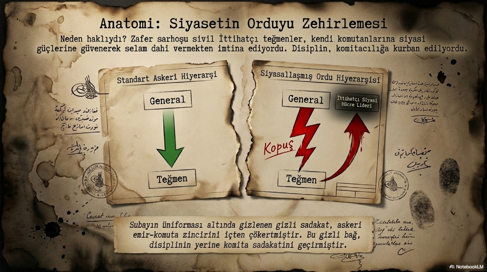
Bölüm 06
Bosna, Trablusgarp ve Saha Dersi
Meşrutiyet’ten sonra Cemiyet Mustafa Kemal’i karar merkezine taşımadı ama onun askerî yeteneklerinden yararlandı. Kasım 1908’de Fevzi Çakmak’la birlikte Bosna-Hersek’e gizli bir inceleme için gönderildi. Avusturya-Macaristan’ın bölgedeki askerî yığınağını yerinde değerlendirdi. Bu görev onun Batılı büyük bir devlet toprağını yakından gördüğü ilk ciddi temaslardan biriydi. Dönüşte yığınağın Osmanlı’dan çok Sırbistan’a yönelik olduğu kanaatine vardı. Bu tür görevler, onun masa başı hayalperest değil, sahadan veri toplayan bir kurmay olduğunu gösterir.
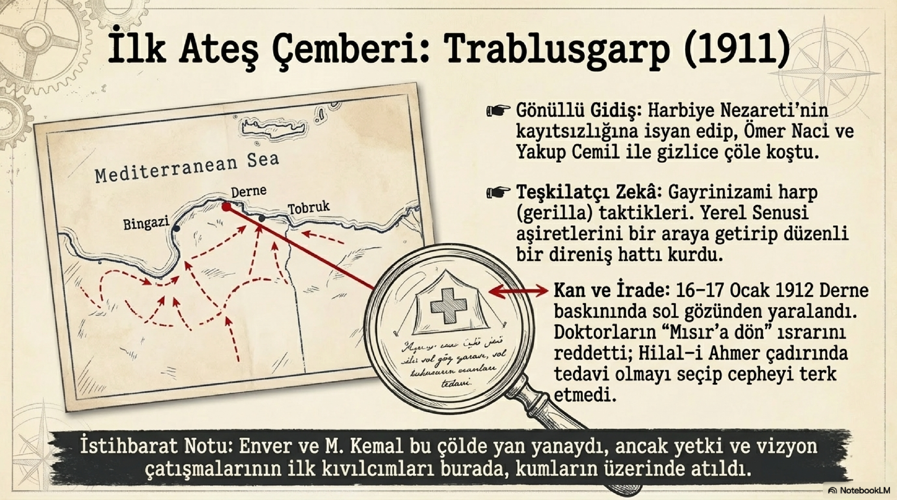
1911’de Trablusgarp Harbi patlak verdiğinde Mustafa Kemal Genelkurmay Birinci Şube’de görevliydi. Osmanlı Devleti’nin denizaşırı bu toprağı savunmakta zorlanacağı açıktı. Donanma yetersizdi, İtalyan ablukası sertti, İstanbul’da kararsızlık hakimdi. Buna rağmen genç subaylar cepheye gitmek için adeta yarıştı. Mustafa Kemal de ilk gidenlerden olmak istedi. İlk girişimi sonuçsuz kaldı; üç gece Şam vapurunda bekledikten sonra geri çevrildi. Fakat vazgeçmedi. Ömer Naci ile birlikte ikinci kez yola çıktı ve Trablusgarp’a ulaştı.
Trablusgarp, Mustafa Kemal için romantik kahramanlık sahnesinden çok daha fazlasıdır. Tobruk ve Derne hattında yerel kuvvetlerle çalıştı, sınırlı imkanlarla savunma örgütledi, coğrafyanın zorluğunu ve gayrinizami savaşın gerçek yüzünü gördü. 16-17 Ocak 1912’de gözünden yaralandı. Doktorlar tedavi için cepheden ayrılmasını istese de o kalmayı tercih etti. Bir süre görme sorunu yaşadı, yeniden toparlandı ve göreve döndü. Bu tecrübe onun askerî karakterinde iki şeyi güçlendirdi: sahada soğukkanlılık ve sınırlı imkanla sonuç alma becerisi.
Bölüm 07
Enver ile Aynı Kuşak, Ayrı Yol
Mustafa Kemal ile Enver Paşa ilişkisi, İttihatçılık hikayesinin en dikkat çekici gerilimlerinden biridir. İkisi de genç, hırslı, çalışkan ve askerî kabiliyeti yüksek subaylardı. İkisi de imparatorluğun dağılmasını durdurmak isteyen bir kuşağın çocuklarıydı. Fakat karakterleri birbirinden çok farklıydı. Enver hızlı yükselen, sembol haline gelen, kitlelerin gözünde Hürriyet Kahramanı’na dönüşen bir figürdü. Mustafa Kemal daha hesaplı, daha soğukkanlı, daha eleştirel ve daha sabırlıydı. Enver kalabalığın alkışına daha erken çıktı; Mustafa Kemal ise çoğu zaman kenardan izledi, not aldı, doğru anı bekledi.
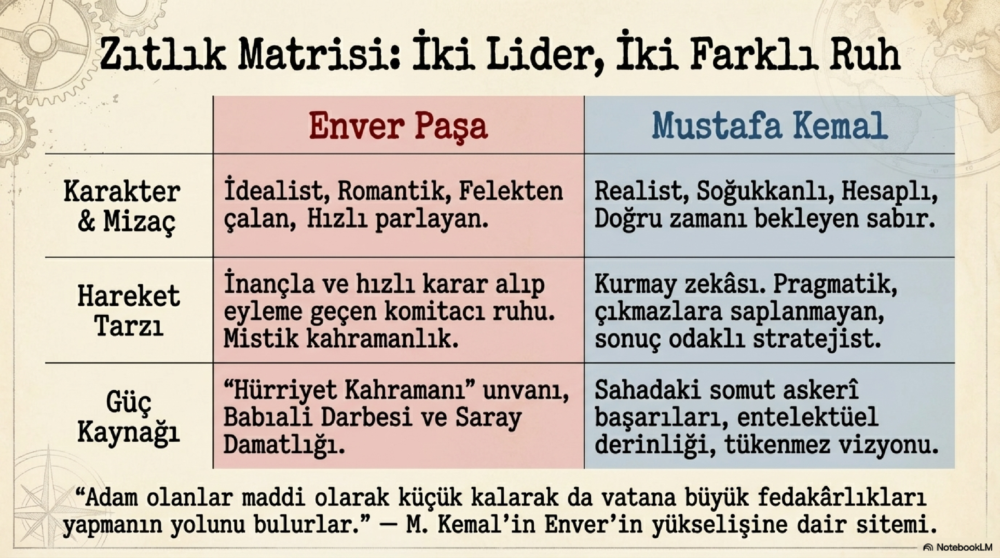
Balkan Harbi ve özellikle 1913 sonrasında bu fark daha görünür hale geldi. Şarköy harekatı çevresindeki tartışmalar, Edirne’nin geri alınması, Enver’in Babıali Baskını’yla iktidar yürüyüşünde öne çıkması Mustafa Kemal’in merkezden daha da uzaklaşmasına yol açtı. Mustafa Kemal ve Ali Fethi, Enver’in bazı hamlelerine mesafeli baktılar. Fakat Enver’in yükselişi durdurulamadı. Cemiyet içinde karizma, cüret ve siyasi fırsatları kullanma becerisi Enver’i öne taşırken, Mustafa Kemal’in disiplinli kurmay aklı geri planda kaldı. Tarih bazen en doğru soruyu soranı değil, en hızlı sahneye çıkanı alkışlar. O dönem sahne Enver’indi.
Bölüm 08
Sofya: Sürgün Değil, Stratejik Bekleme
1913 kongresi sırasında Mustafa Kemal ve Ali Fethi’nin son bir çıkış hazırlığı yaptığı, fakat bunun önünün kesildiği görülür. Ardından Ali Fethi’ye Sofya elçiliği, Mustafa Kemal’e de Sofya askerî ataşeliği yolu açıldı. Bu tayin ilk bakışta merkezin onu İstanbul’dan uzaklaştırması gibi duruyordu. Gerçekten de İttihatçı lider kadro, rahatsız edici bir eleştiri sesini başkent siyasetinden uzak tutmuş oluyordu. Fakat Mustafa Kemal açısından Sofya yalnızca sürgün değildi. Balkan devletlerini, Bulgar siyasetini, diplomasi dilini ve Avrupa dengelerini yakından izlediği bir okuldu.
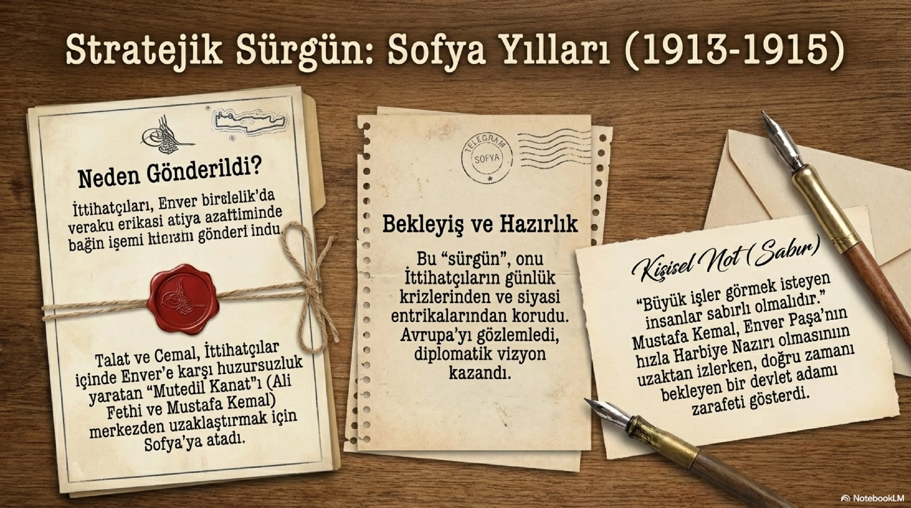
Sofya’da durdu ama pasifleşmedi. Enver’in Harbiye Nazırlığı’na yükselişini, Osmanlı ordusundaki terfi ve iktidar düzenini, yaklaşan büyük savaşın işaretlerini dikkatle takip etti. Birinci Dünya Savaşı yaklaşırken Almanların kazanacağına kesin inanmıyordu; hatta Osmanlı’nın bu savaşa girmesinin büyük risk taşıdığını düşünüyordu. Bulgaristan’la yapılan temaslarda kendisinin devre dışı bırakılmasından rahatsız oldu. Bu kırgınlık kişisel gururdan ibaret değildi. Bulunduğu ülkede askerî ataşe olan bir subayın, o ülkeyle ilgili ciddi görüşmelerden habersiz bırakılması kurmay akıl açısından da tuhaftı.
Bölüm 09
Çanakkale: Bekleyen Adamın Sahneye Çıkışı
Savaş başlayınca Mustafa Kemal Sofya’da kalmak istemedi. Arkadaşları cephedeyken ataşemiliterlik görevinde beklemeyi kendisine yakıştıramadı. Enver Paşa’ya ısrarla aktif görev istediğini bildirdi. Sonunda 19. Tümen komutanlığına atandı. Bu atama 18 Ocak 1915 tarihli telgrafla geldi. Enver Sarıkamış faciasının gölgesindeyken, emir Talat imzasıyla ulaştı. Tarih açısından ilginçtir: Onu merkezin dışına iten İttihatçı düzen, savaşın en kritik anında onun askerî yeteneğine ihtiyaç duyacaktı.
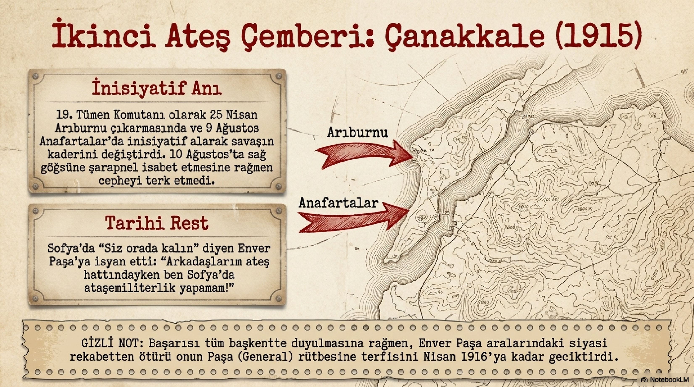
25 Nisan 1915’te Arıburnu çıkarması başladığında Mustafa Kemal’in inisiyatifi savaşın seyrini değiştirdi. Emir beklemekle yetinmedi; durumu sahada okudu ve birlikleri kritik noktaya yönlendirdi. 9 Ağustos Anafartalar’da yine ön plana çıktı. 10 Ağustos’ta göğsüne şarapnel parçası isabet etti, cebindeki saat darbenin etkisini azalttı ve cepheyi terk etmedi. Çanakkale, onun yalnızca askerî şöhret kazandığı yer değildir. Aynı zamanda yıllardır merkezde geri planda tutulan bir kurmay subayın, sahada karar aldığı zaman nasıl fark yarattığının ispatıdır.
Çanakkale’den sonra ünü arttı. 1 Haziran 1915’te Kurmay Albaylığa yükseldi. Enver Paşa başarılarını tebrik etti; fakat generalliğe yükselişi Nisan 1916’ya kadar gecikti. Bu gecikmenin arkasında siyasi rekabetin ve Enver’le aralarındaki gerilimin etkisi olduğu düşünülür. Burada mesele yalnızca rütbe değildir. Mustafa Kemal’in yükselişi, İttihatçı merkezin içindeki güç dengelerini de zorlayabilecek bir potansiyeldi. Enver için Mustafa Kemal yalnızca başarılı bir komutan değil, aynı kuşaktan gelen ciddi bir alternatifti.
Bölüm 10
Yakup Cemil Vakası ve İsimlerin Gölgesi
1916’daki Yakup Cemil Vakası, Mustafa Kemal’in adının İttihatçı iç hesaplaşmalarda nasıl bir anlam taşıdığını gösterir. Yakup Cemil’in ayrı barış arayışı ve iktidar değişikliği planları içinde Mustafa Kemal’i Harbiye Nazırı veya başkomutan vekili gibi düşünmesi, onun askeri itibarının sadece cephede değil, siyaset kulislerinde de bilindiğini gösterir. Fakat Mustafa Kemal böyle bir komitacı darbe hamlesinin adamı değildi. Kendi adının maceracı bir plan içinde kullanılmasına izin verecek karakterde de değildi. Onun yolu, bir fedai planıyla iktidara fırlamak değil; doğru zamanda meşruiyet, örgüt, askerî güç ve siyasi hedefi aynı hatta toplamaktı.
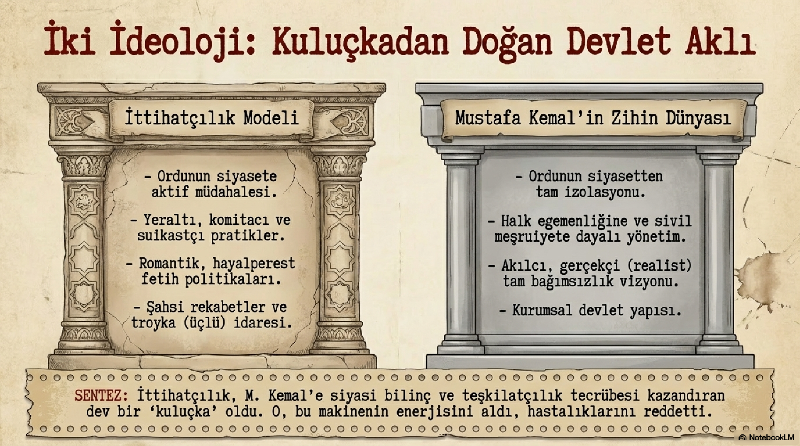
Bu yüzden Mustafa Kemal’in İttihatçılıktan ayrışmasını basit bir kişisel çekişme gibi okumak eksik kalır. Evet, Enver’le rekabet vardı. Evet, merkez kadro ona yeterince alan açmadı. Evet, bazı kararları onu rahatsız etti. Ama daha derindeki ayrım şuydu: Mustafa Kemal, gizli komite refleksinin devleti uzun süre taşıyamayacağını düşünüyordu. Ona göre devlet, kişisel cesaretle, fedai hamlesiyle veya kapalı merkez kararlarıyla değil; akıl, disiplin, kurum ve meşruiyetle ayakta kalabilirdi. Bu fikir, Milli Mücadele’de çok daha görünür hale gelecekti.
Bölüm 11
1918 Sonrası: İttihatçılıktan Cumhuriyet’e Açılan Kapı
30 Ekim 1918 Mondros Mütarekesi’nden sonra İttihat ve Terakki iktidarı çöktü. Enver, Talat ve Cemal ülke dışına çıktı. Cemiyet resmen sahneden çekildi ama İttihatçılık bir anda buharlaşmadı. Kadrolar, örgütlenme alışkanlıkları, devlet kurtarma refleksi, yerel ağlar ve askerî-siyasi tecrübe yaşamaya devam etti. Mustafa Kemal’in 19 Mayıs 1919’da Samsun’a çıkışından sonra Millî Mücadele’yi yürütürken yararlandığı zemin, bu eski tecrübeden tamamen bağımsız değildi. Birçok eski İttihatçı, yeni mücadelenin farklı kademelerinde yer aldı.
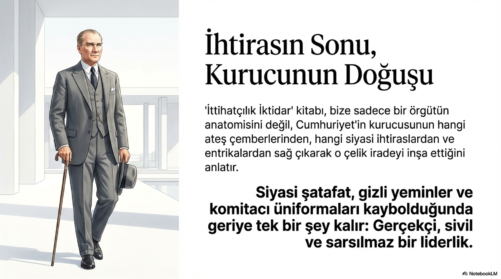
Ama burada dikkatli olmak gerekir. Cumhuriyet’i basitçe “İttihatçılığın devamı” diye anlatmak kolaydır, fakat eksiktir. Mustafa Kemal, İttihatçı kuşağın içinden geldi; onların cesaretini, örgüt deneyimini, devlet kurtarma aciliyetini ve modernleşme arzusunu tanıdı. Fakat aynı zamanda onların hatalarını da gördü: ordu-siyaset karışması, dar merkez siyaseti, maceracı hamleler, büyük savaş kararındaki ağır risk, kişisel rekabetlerin devlet aklını gölgelemesi. Onun farkı, bu mirası olduğu gibi devralmak değil, onu dönüştürmektir.
Mustafa Kemal bu sekizli içinde İttihatçılığın en kritik sorusunu temsil eder: Bir gizli örgüt devleti kurtarmak için doğabilir; peki devleti yeniden kurmak gerektiğinde aynı yöntemlerle yürüyebilir mi? Onun cevabı hayırdır. Mücadele döneminde örgüt gerekir, cephe gerekir, kararlılık gerekir; ama yeni devletin kalıcı olması için hukuk, kurum, meclis, sivil meşruiyet ve açık siyasi hedef gerekir. Mustafa Kemal’in İttihatçılık içindeki yeri bu yüzden çok değerlidir. O, hareketin içinden çıkan ama hareketin sınırlarını gören adamdır.
Bölüm 12
Mustafa Kemal İttihatçılığın Hangi Damarını Temsil Eder?
Sonuç olarak Mustafa Kemal’i İttihatçılık sitesinde anlatmak, yalnızca Atatürk biyografisine giriş yapmak değildir. Burada asıl mesele şudur: İttihat ve Terakki, Osmanlı’nın son döneminde büyük bir enerji, büyük bir cesaret ve büyük bir telaş üretti. Mustafa Kemal bu enerjinin içinden çıktı; fakat telaşın esiri olmadı. İttihatçıların devlet kurtarma refleksini aldı, komitacılığın sınırlarını gördü, askerî disiplinle siyasi meşruiyeti farklı bir dengede kurmaya çalıştı. Bu yüzden onun hikayesi, İttihatçılığın hem en güçlü mirasını hem de en sert eleştirisini aynı anda taşır.